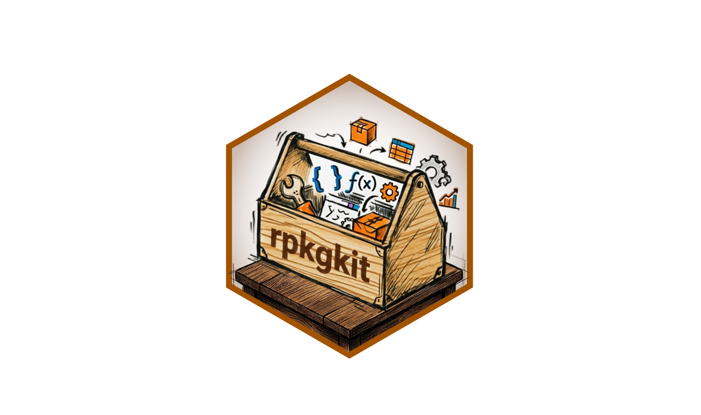

Add global .Rbuildignore patterns
Source:R/17_add_global_rbuildignore.R
add_global_rbuildignore.RdAppends a curated set of common files and directories to .Rbuildignore
to exclude them from R package builds. This supplements the auto-generated
.Rbuildignore created by usethis::create_package().
Already-present patterns are silently skipped. The curated set covers: R build artifacts, Git files, IDE/dev tool directories, CI/CD config, documentation build artifacts, CRAN/development files, and other common files that should not be shipped with a package.